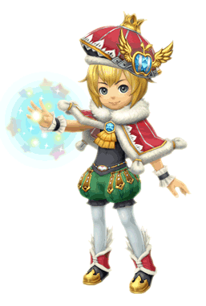

7 |
Personnages |
 |
● Leo
Tribu : Clavat Jeune roi ayant perdu sa mère alors qu'il n'était qu'un enfant, puis son royaume peu de temps après. Choisi par le cristal, il a pour tâche de reconstruire son royaume sur un nouveau territoire. Il sera aidé en cela par le pouvoir de l'architek, un don magique lui permettant de transformer les souvenirs en réalité. |
|
 ● Chime ● ChimeTribu : mi-Clavat, mi-Selkie À la fois tutrice, conseillère et meilleure amie de Leo, c'est aussi la chancelière du royaume. Elle apparaît instantanément aux côtés de Leo dès qu'il la convoque en faisant sonner sa clochette. Elle l'assiste dans toutes les tâches administratives, y compris la construction de bâtiments et le contrôle du moral des citoyens. C'est même elle qui envoie le jeune roi se coucher ! |
|
 ● Hugh Yurg ● Hugh YurgTribu : Lilty Héros courageux ayant livré d'innombrables batailles et conduit autrefois les caravanes de cristal dans le royaume de Leo. Ses conseils en matière de combat et de cuisine sont très précieux et il sert le jeune roi avec une loyauté indéfectible. |
|
 ● Pavlov ● PavlovTribu : inconnue Créature mal embouchée qui apparaît brusquement à l'arrivée du roi et de son escorte dans le nouveau royaume. Cet oiseau parlant incapable de voler semble pourtant savoir bien plus de choses sur ce royaume qu'il n'y paraît... |
 |
 |
 |